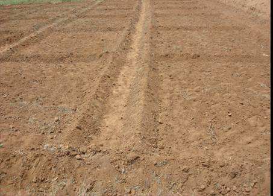

|
||||||||||||
PARTICULARS OF RAGI STRAINS
CO 9 CO 13 CO (Ra) 14 Parentage EX 4336 x PLR 1 CO 7 X TAH 107 Malawi 1305 x CO 13 Duration (days) 100-105 95 - 100 105-110 Season Rainfed/ Irrigated Both Both Both Grain yield kg/ha Irrigated 4500 3600 2892 Rainfed 3100 2300 2794 Straw yield kg/ha Irrigated 8000 10000 8113 Rainfed 6500 7500 8503 Stem Erect Erect Erect Height (cm) 75-80 85 - 90 115-120 Tillers 5-8 3 - 5 8-9 Days to 50% flowering 65-70 55 - 60 72 Ear size and shape incurved fingers Open top curved Fingers 8-9 10 –17 9-12 Ear length (cm) 8 8-10 10-12 Grain colour White Light Brown Brown 1000 grain wt (g) 2.7 1.7 3.1
Paiyur 1 TRY 1 Paiyur 2 Parentage Pureline selection from
PR 722Selection from HR 374 VL 145 x Selection 10 Duration (days) 115-120 102 115 Season Rainfed / Irrigated Rainfed Kharif irrigated Sodic/ saline soils Rainfed Grain yield kg/ha Irrigated .. 4011 -- Rainfed 3125 .. 2527 Straw yield kg/ha Irrigated .. 6800 -- Rainfed 5750 .. 4200 Stem Erect Erect Errect Height (cm) 110 100 90 Tillers 1 - 3 5 - 7 3-4 Days to 50% flowering 80 78 81 Ear size and shape Open Incurved Incurved Fingers 6 - 8 5-8 7-8 Ear length (cm) 8 7.6 7.0 Grain colour Brown Brown Brown 1000 grain wt (g) 2.7 2.74 2.9
IRRIGATED
CROP MANAGEMENT
I. PREPARATION OF NURSERY (IRRIGATED TRANSPLANTED CROP)
1. PREPARATION OF LAND
2. FORMING RAISED BED

Form Raised Bed of size 3 m x 1.5 m
3. PRE-TREATMENT OF THE SEEDS WITH FUNGICIDES
4. SOWING AND COVERING THE SEEDS
5. WATER MANAGEMENT
No. of irrigations
RED SOILS
HEAVY SOILS
1st
Immediately after sowing
Immediately after sowing
2nd
3rd day after sowing
4th day after sowing
3rd
7th day after sowing
9th day after sowing
4th
12th day after sowing
16th day after sowing
5th
17th day after sowing
..
NOTE:
6. PULLING OUT THE SEEDLINGS FOR PLANTING
Pull out seedlings on the 17th to 20th day of sowing for planting.
II. PREPARATION OF MAIN FIELD
1. PLOUGHING THE FIELD
Plough twice with mould board plough or thrice with wooden plough till a good tilth is obtained.
2. APPLICATION OF FYM OR COMPOST
Spread 12.5 t/ha of FYM or compost or composted coir pith evenly on the unploughed field and then plough and incorporate in the soil. NOTE: Do not spread and leave the manure uncovered in the field as nutrients will be lost.
3. APPLICATION OF FERTILIZERS
4. FORMING BEDS AND CHANNELS
5. APPLICATION OF MICRONUTRIENT MIXTURE
III. MANAGEMENT OF MAIN FIELD
1. TRANSPLANTING THE SEEDLINGS
|
||
| Adopt a spacing of 30x10 cm for planting | ||
2. WEED MANAGEMENT
Pre-emergence herbicide |
 Weed free ragi field |
3. HOEING AND HAND WEEDING
IV. WATER MANAGEMENT
Regulate irrigation according to the following growth phases of the crop
No. of
irrigations80 days Crop duration
100 days120 days Vegetative phase(Nursery)
1 to 16 1 to 18 1 to 20 Vegetative phase
(in main field)1 to18 1 to 20 1 to 22 Flowering phase 19 to 40 21 to 55 23 to 69 Maturity phase Beyond 40 days Beyond 55 days Beyond 69 days Heavy soils Establishment 1 1st day 1st day 1st day (1-7 days) 2 5th day 5th day 5th day Vegetative phase 1 18th day 20th day 20th day (8-20 days) 2 31st day 33rd day 30th day Flowering phase 1 41st day 42nd day 37thd ay (21-55 days) 2 51st day 52nd day 44th day 3 -- -- 63rd day Maturity phase 1 61st day 62nd day 78th day (56-120 days) 2 -- -- 93rd day Stop irrigation thereafter Light soils Establishment 1 1st day 1st day 1st day (1 – 7 days) 2 5th day 5th day 5th day Vegetative phase 1 15th day 16th day 16th day (8 - 20 days) 2 26th day 28th day 28th day Flowering phase 1 36th day 36th day 36th day (21 - 55 days) 2 45th day 45th day 45th day 3 .. 54th day 54th day Maturity phase 1 58th day 69th day 78th day (56 - 120 days) 2 70th day 85th day 93rd day Stop irrigation thereafter NOTE: The irrigation schedule is given only as a general guideline. Regulate irrigation depending upon the prevailing weather conditions and receipt of rain.
V. HARVESTING
1. DECIDE WHEN TO HARVEST
2. HARVEST OF THE CROP
First harvest
Second Harvest
i. Threshing
Green earheads if harvested will contaminate the seeds with immature seeds and interfere cleaning, drying and grading. Dry earheads until seed moisture content is 15% and separate manually by threshing with bamboo stick or machine thresher.
ii. Precleaning and drying
Threshed seeds should be precleaned before sundrying, seeds must be dried to 12% before grading.
Protection from storage pests
Special Problems
RAGI : RAINFED
Rainfall
Average and well distributed rainfall of 450-500 mm is optimum for rainfed ragi
Season
Finger millet is grown in different seasons in different parts of the country. As a rainfed crop, it is normally sown in June- July in Tamil Nadu. It also grown in winter season (rabi) by planting in September – October in Tamil Nadu and as a summer irrigated crop by planting January – February.
Tillage
Fallow ploughing is advantageous for moisture conservation. In the month of April or May, one deep ploughing with mould board plough followed by ploughing with wooden plough twice is necessary. Before sowing secondary tillage with cultivator and multiple tooth hoe to prepare smooth seed bed is necessary.
Seed rate and planting
A plant population of 4 – 5 lakhs per ha is optimum for getting higher yields and higher or lower population than the optimum will reduce the yield. Line sowing is ideal and seed drills giving spacing of 22.5 – 30 cm between rows should be used. Finger millet seeds are very small (400 seeds/g) and the recommended seed rate of 15-20 kg per hectare will contain about 4 million seeds. Therefore, even when seed drill is used thinning within the row leaving a spacing of 7.5 – 10 cm between plants, must be followed.
Sowing by seed-cum-fertilizer drill is advantageous for line sowing besides efficient utilization of applied nutrients.
Maintenance of optimum plant population is an important prerequisite for getting higher yield under rainfed conditions. Poor germination, often, is the result of inadequate moisture after sowing in low rainfall areas. Under these conditions, the adoption of a simple technique like seed hardening will not only improve germination and subsequent plant stand but also impart early seedling vigour and tolerance to drought.
The procedure of seed hardening technique is as follows.
Manuring and fertilization
Finger millet responds well to fertilizer application especially to N and P. The recommended doses of fertilizers vary from state to state for rainfed crop. Recommended dose of 40:20:20 kg/ha N:P:K was applied. With judicious application of farmyard manure inorganic fertilizer efficiency is enhanced. Entire P2O5 and K2O are to be applied at sowing, whereas nitrogen is to be applied in two or three split doses depending upon moisture availability. In areas of good rainfall and moisture availability, 50% of recommended nitrogen is to be applied at sowing and the remaining 50% in two equal splits at 25-30 and 40-45 days after sowing. In areas of uncertain rainfall, 50% at sowing and the remaining 50% around 35 days after sowing is recommended.
Bio-fertilizers
Treating seeds with Azospirillum brasilense (N fixing bacterium) and Aspergillus awamori (P solubilizing fungs) @ 25 g/kg seed is beneficial. In case seeds are to be treated with seed dressing chemicals, treat the seeds first with seed dressing chemicals and then with bio-fertilizers at the time of sowing.
Procedures for inoculating seeds with biofertilizers
Weed control
Cropping systems
Crop rotation
Rotation with legumes like green / black gram / field gram / soybean / horse gram or ground nut in southern state will minimize inorganic fertilizer application and also sustain higher yields.
Intercropping
Finger millet based inter cropping system with pigeon pea at 4:1 ratio is recommended for rainfed situation to obtain high grain yield
Crop Protection
Post Harvest Technology